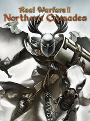

Real Warfare 2: Northern Crusades
Real Warfare 2: Northern Crusades
Details
|  | |
| Playtime | Not Played |
| Last Activity | Never |
| Added | 8/19/2023 14:50:25 |
| Modified | 8/19/2023 20:27:09 |
| Completion Status | Not Played |
| Library | Steam |
| Source | Steam |
| Platform | PC (Windows) |
| Release Date | 11/18/2011 |
| Community Score | 40 |
| Critic Score | |
| User Score | |
| Genre | Real Time Strategy (RTS) Role-playing (RPG) Strategy |
| Developer | Unicorn Games Studio |
| Publisher | 1C-SoftClub |
| Feature | Multiplayer Single Player |
| Links | Official Steam Twitch |
| Tag | |
Description
Real Warfare 2: Northern Crusades is the next installment in this series of realistic real-time strategy games covering various periods in the development of the present day civilization – from the Middle Ages to today. This new title helps players witness the key events in the history of the Teutonic Order in 13th century, namely conquering the pagan Prussia. All battles form a single storyline campaign. The player will act as a Komtur of the Teutonic Order as they relive the battles of the crusaders, regardless of the low manpower of the Order and the strong resistance of the heathens.
The project perfectly comprises two types of gameplay and owing to that the objectives of the Komtur are not simply limited to participation in battles. The strategic map involves the gamer into a colorful and integral world and allows them to travel around the map in the real time. The mode features full freedom of movement, dialogues with locals, RPG elements, quest system and much more. However, sooner or later, the players will have no other choice other than engage their faithful warriors into a battle. And this could be a combat with other armies, large-scale sieges of towns and castles, using various special assault weaponry and tools and fight right on top the walls and fortifications.
The project perfectly comprises two types of gameplay and owing to that the objectives of the Komtur are not simply limited to participation in battles. The strategic map involves the gamer into a colorful and integral world and allows them to travel around the map in the real time. The mode features full freedom of movement, dialogues with locals, RPG elements, quest system and much more. However, sooner or later, the players will have no other choice other than engage their faithful warriors into a battle. And this could be a combat with other armies, large-scale sieges of towns and castles, using various special assault weaponry and tools and fight right on top the walls and fortifications.
Key features:
- RPG system. Troops gain experience throughout the campaign and carry it over from battle to battle.
- Combat system. A unique combat system, dependent on up to 80 game factors. Moral component of the combat system evaluates the battlefield situation every second to bring the simulation of combat behavior for the “living” warriors as close to reality as possible.
- Unprecedented scale. Real Warfare 2: Northern Crusades features not only really large-scale battles with more than 10,000 warriors engaged, but impressive and unprecedentedly vast actions during the siege and defense of towns and castles, using various special assault weaponry and tools and fight right on top the walls and fortifications.
- Freedom of actions. Variable modifiers consider the environment a unit is battling in and make the game tactically versatile.
- Two gameplay modes. The game now features a strategic map, where the player can travel around the world and interact with various characters; however the battles will be carried out in the well-known tactical mode.
- Network game. Apart from the storyline campaign the game features several diverse multiplayer modes. From 2 up to 6 gamers can participate in a battle at a dedicated Internet server. The results are stored in online Hall of Fame.
- State-of-the-art graphics. Graphics engine used in the game provide for the highest level of details. Historically correct armor and weaponry, realistic animation and battle scenes, which correspond to the specific period – Real Warfare 2: Northern Crusades depicts the 13th century in great details.